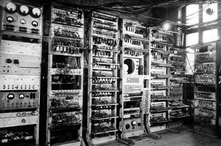

Tim Berners-Lee
Sir Timothy "Tim" John Berners-Lee (Londres, Reino Unido, 8 de junio de 1955) es un científico de la computación británico, conocido por ser el padre de la Web. Estableció la primera comunicación entre un cliente y un servidor usando el protocolo HTTP en noviembre de 1989. En octubre de 1994 fundó el Consorcio de la World Wide Web (W3C) con sede en el MIT, para supervisar y estandarizar el desarrollo de las tecnologías sobre las que se fundamenta la Web y que permiten el funcionamiento de Internet.

Biografía
Nació en el sudoeste de Londres en 1955. Sus padres eran matemáticos y formaron parte del equipo que construyó el Manchester Mark I (una de las primeras computadoras). Durante el tiempo que estuvo en la universidad, construyó una computadora con una soldadora, circuitos TTL, un procesador Motorola 68000 y un televisor viejo. Se graduó en física en 1976 en el Queen's College de la Universidad de Oxford. Conoció a su primera esposa en este periodo. En 1978, trabajó en D.G. Nash Limited (también en Poole) escribió un sistema operativo.

Desarrollo de su carrera
Berners-Lee trabajó en el CERN desde junio hasta diciembre de 1980. Durante ese tiempo, propuso un proyecto basado en el hipertexto para facilitar la forma de compartir y la puesta al día de la información entre investigadores. En este periodo también construyó un programa llamado Enquire que no llegó a ver la luz.
Ver mas detalles
Fuente: Wikipedia
Después de dejar el CERN, en 1980, se fue a trabajar a la empresa de John Poole Image Computer Systems Ltd., pero regresó al CERN otra vez en 1984.

Berners-Lee trabajó en el CERN desde junio hasta diciembre de 1980. Durante ese tiempo, propuso un proyecto basado en el hipertexto para facilitar la forma de compartir y la puesta al día de la información entre investigadores. En este periodo también construyó un programa llamado Enquire que no llegó a ver la luz.